Crystal Engineering and Structural Analysis Group Web Page
Welcome to the
Crystal Engineering and Structural Analysis Group
Zespół Inżynierii Krystalicznej i Analizy Strukturalnej - ZIKAS)
ZIKAS was founded on February 2010 as the continuation of the former Crystal Structure Analysis Group
established in early seventies of 20th century by late professor Józef Chojnacki.
| Multi-Component Crystals: Synthesis, Concepts, Function 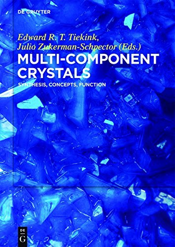 by Edward Tiekink (Editor), Julio Zukerman-Schpector (Editor), Srinivasulu Aitipamula (Contributor), Ivana Antonijevic (Contributor), Jubaraj B. Baruah (Contributor), Orion B. Berryman (Contributor), Elena V. Boldyreva (Contributor), Daniel A. Decato (Contributor), Marc Fourmigue (Contributor), Ryan H. Groeneman (Contributor), Marlena Gryl (Contributor), Kristin M. Hutchins (Contributor), Kohei Johmoto (Contributor), Anna Krawczuk (Contributor), Tom Leyssens (Contributor), Alex Manin (Contributor), Leonard R. MacGillivray (Contributor), Disam Malenov (Contributor), German Perlovich (Contributor), Jelena Stojakovic (Contributor), Artem Surov (Contributor), Reginald B.H. Tan (Contributor), Joop H. Ter Horst (Contributor), Hidehiro Uekusa (Contributor), Snezana Zaric (Contributor) |
Joanna Wojnarska was awarded Dragons' Den prize at IUCr2017 Hyderabad for her research project on Engineering crystal symmetry for new non-centrosymmetric materials! 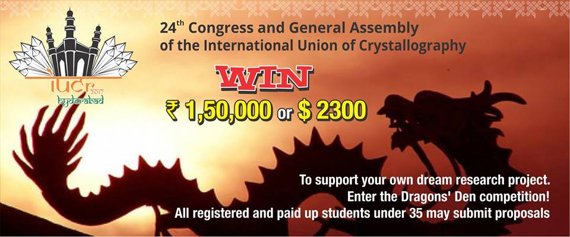 CONGRATULATIONS! |
|
PolaBer A program to compute distributed atomic polarizabilities Authors: Anna Krawczuk, Daniel Perez, Piero Macchi (Copyright 2014) 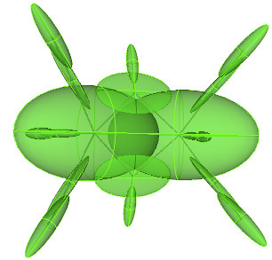 http://www.chemcrys.unibe.ch/PolaBer.html |
Marlena Gryl Charge density and optical properties of multicomponent crystals containing active pharmaceutical ingredients or their analogues 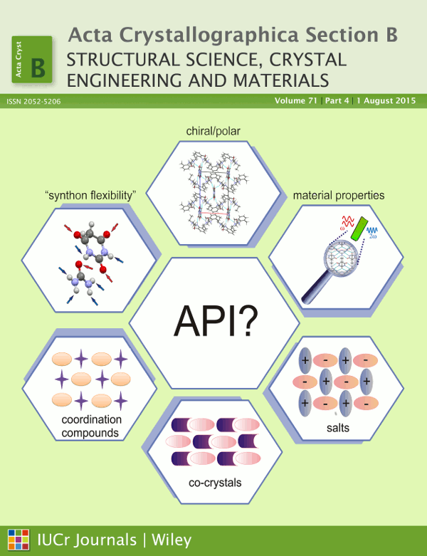 Acta Crystallographica Section B |
|
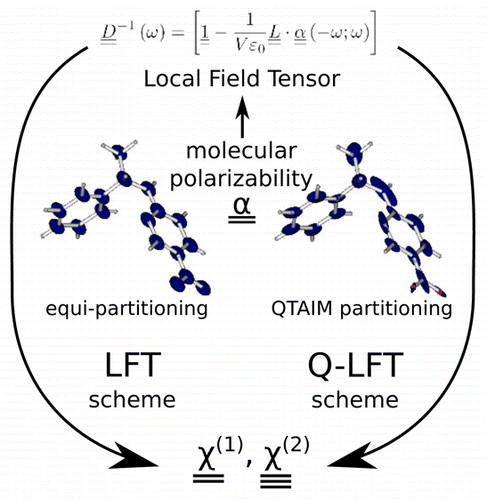 Journal of Physical Chemistry C |
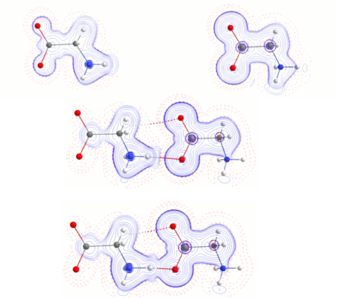 Chemistry Central Journal |
|
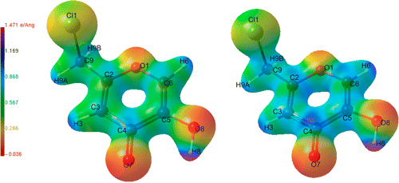 Journal of Physical Chemistry A |
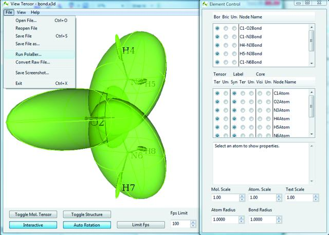 Journal of Applied Crystallography |
|
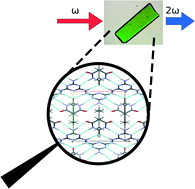 CrystEngComm |
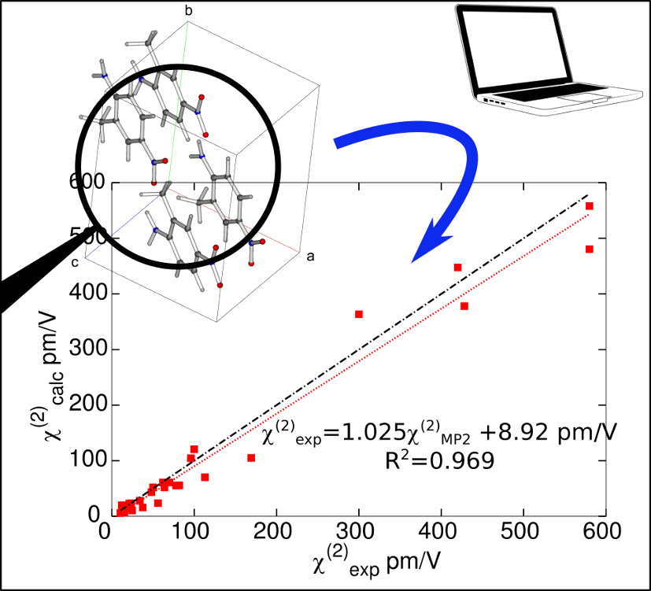 Advanced Optical Materials |
|
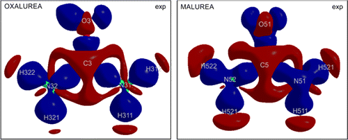 Crystal Growth & Design |
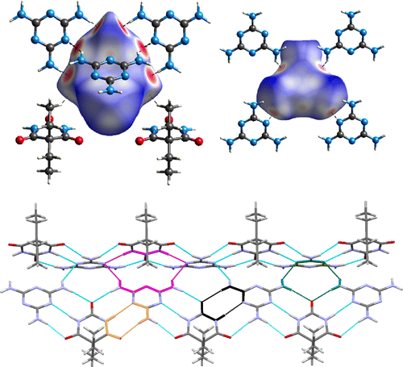 Journal of Physical Chemistry C |